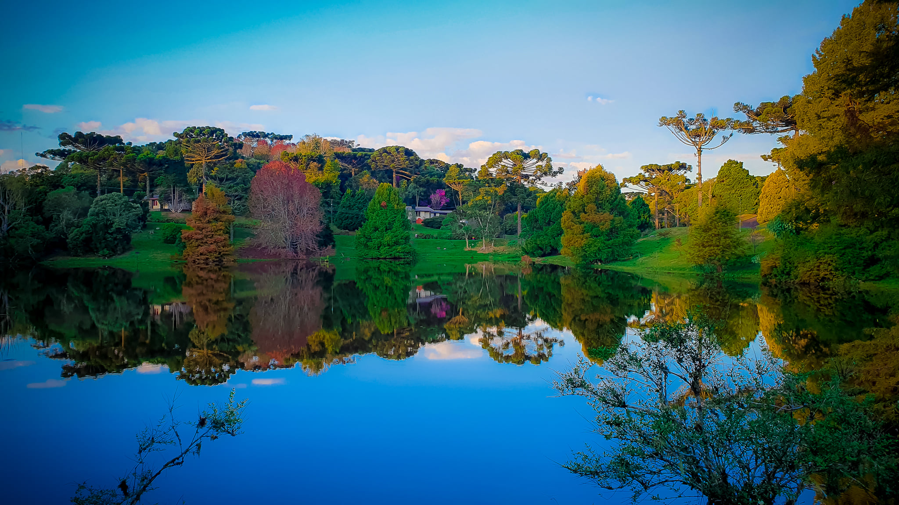
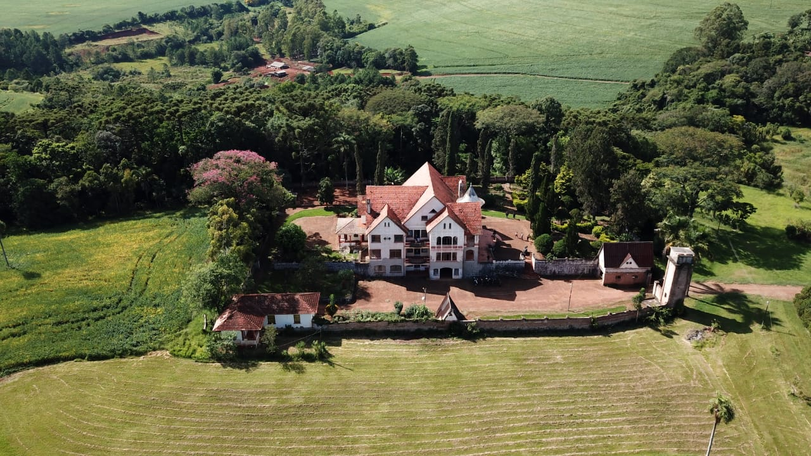
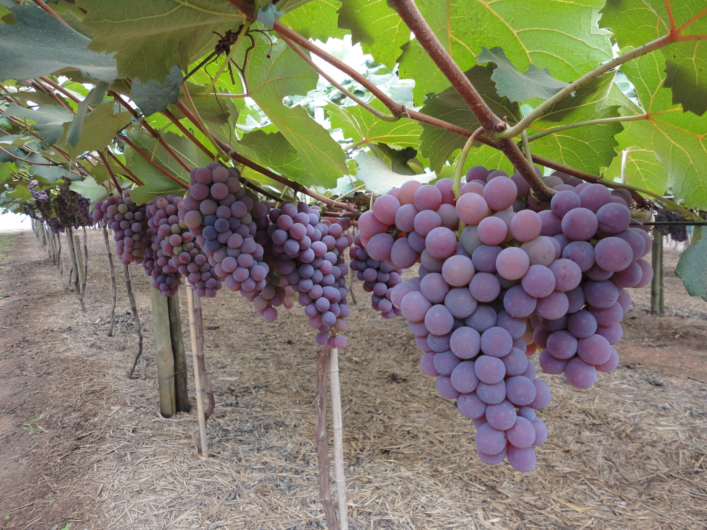

Rio Branco do Ivaí, no Paraná, destaca-se por suas belezas naturais, com cachoeiras, rios e
trilhas ideais para ecoturismo. A cidade oferece turismo rural autêntico, com passeios a
cavalo, pesca e gastronomia típica, além de eventos culturais que refletem a tradição local.
É um destino acolhedor para quem busca tranquilidade e contato com a natureza.

Faxinal
do céu
Faxinal do Céu é uma localidade em Pinhão, Paraná, conhecida pelo Centro de Capacitação e
Lazer administrado pela Copel. Este centro oferece infraestrutura para eventos, cursos e
treinamentos, além de ser um destino de ecoturismo. Com uma vasta área verde, trilhas
ecológicas e espaços recreativos, promove a conscientização ambiental e o bem-estar dos
visitantes, integrando infraestrutura de lazer e preservação ambiental de forma sustentável.

Marilândia
do Sul
Marilândia do Sul, no Paraná, é um destino encantador para o turismo rural e ecológico. A
cidade destaca-se por suas belas cachoeiras, como a do Salto do Apucaraninha, trilhas
ecológicas e uma rica cultura local. Entre suas atrações, está o Castelo Eldorado, uma
construção imponente que remete à arquitetura medieval e oferece uma experiência única de
visitação. Com uma atmosfera tranquila e acolhedora, Marilândia do Sul permite aos
visitantes relaxar, praticar esportes de aventura e vivenciar o modo de vida rural,
proporcionando um contato autêntico com a natureza e a cultura do interior do Brasil.

Rosário
do Ivaí
Rosário do Ivaí, no Paraná, destaca-se pelo turismo ligado à produção de uvas de alta
qualidade. As vinícolas locais oferecem tours e degustações, onde os visitantes podem
apreciar vinhos finos e aprender sobre viticultura. A cidade também é cenário de festivais e
eventos temáticos, que celebram a cultura do vinho. Além disso, Rosário do Ivaí encanta com
suas paisagens naturais e hospitalidade acolhedora, tornando-se um destino ideal para um
passeio relaxante e enriquecedor.